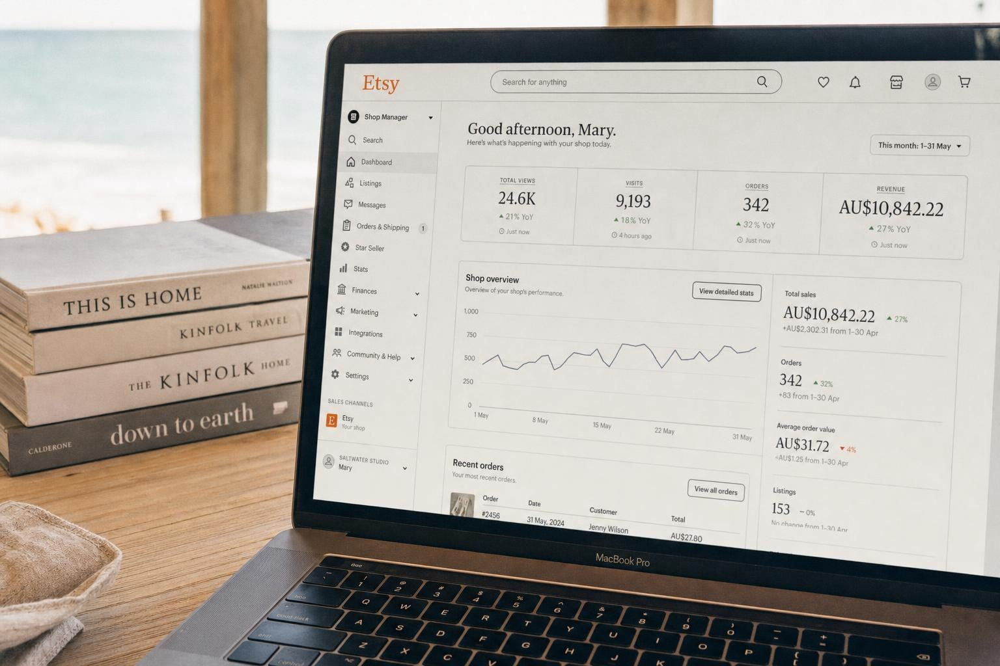
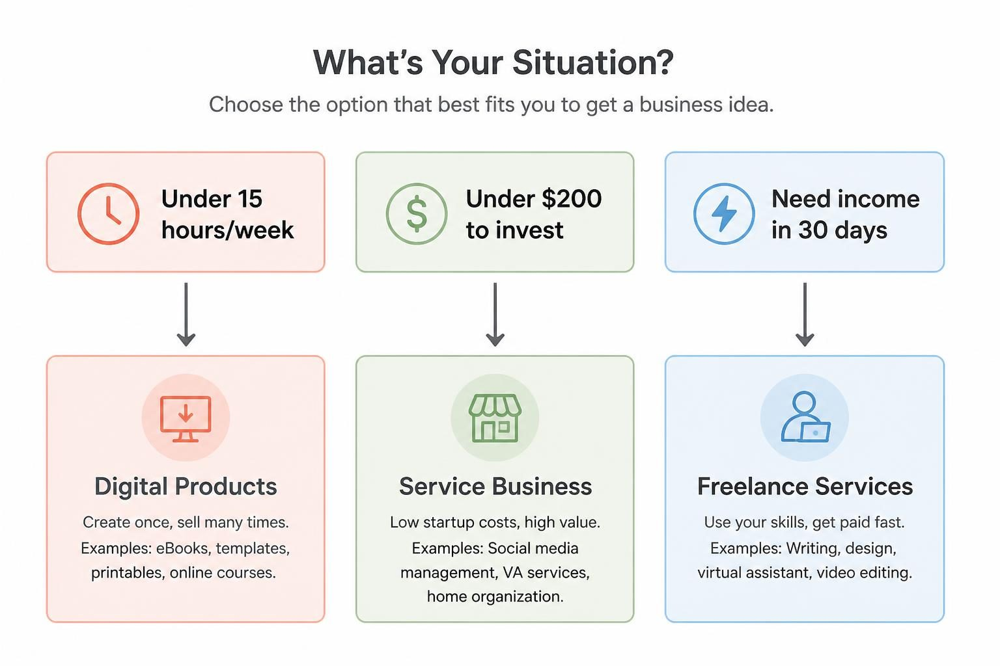
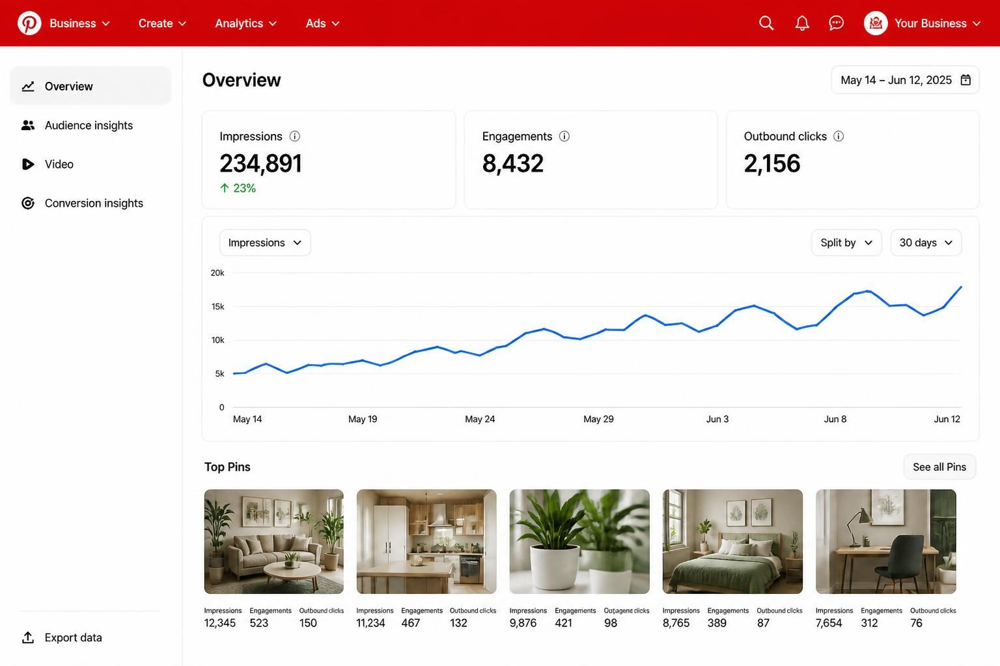
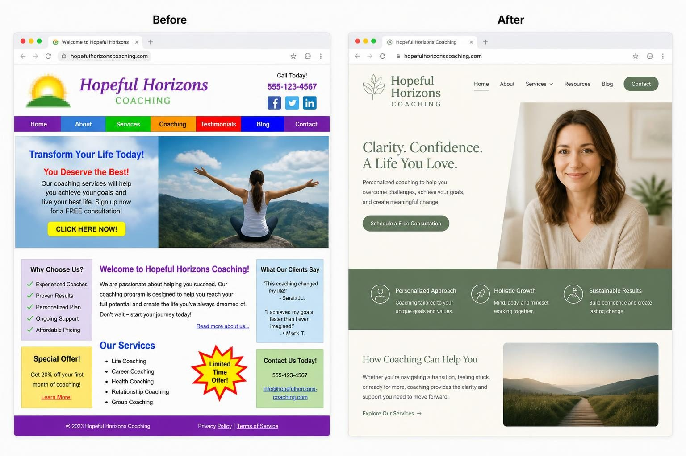
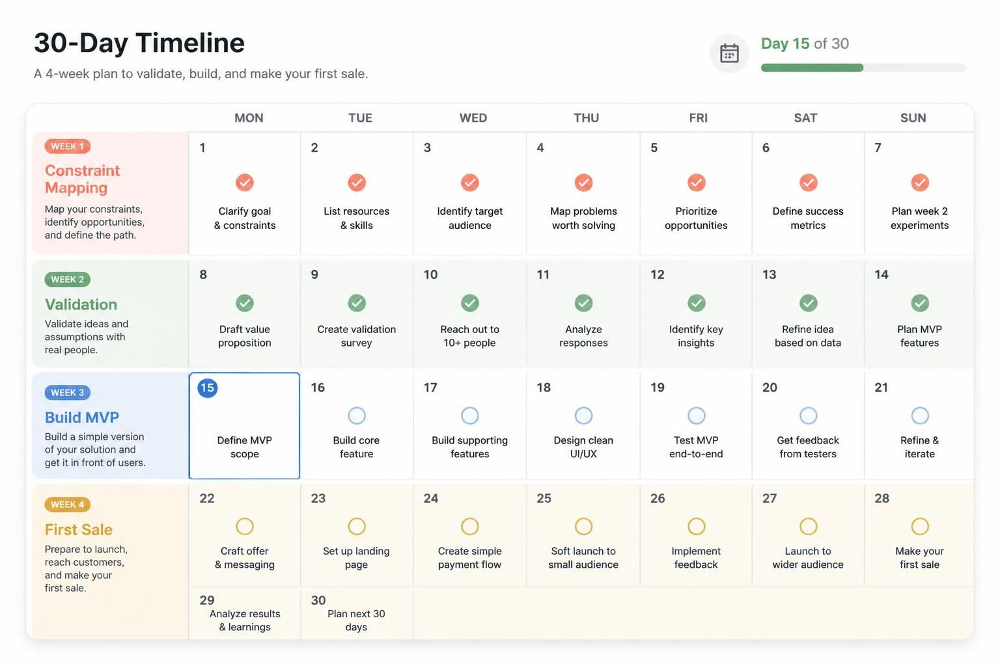

ONLINE BUSINESS IDEAS FOR WOMEN: 12 DIGITAL BUSINESSES YOU CAN START THIS MONTH WITH REAL INCOME POTENTIAL

Online business ideas for women that actually work share one thing: they match your specific constraints - time, money, and existing skills - not some generic "follow your passion" advice. The woman with two hours a day while kids nap needs a completely different business model than the corporate professional with savings and a 90-day runway.
I've watched thousands of women start online businesses over the past decade. The ones who succeed don't pick ideas from a random list. They pick ideas that fit their actual life. And that's exactly what we're doing here.
This isn't another listicle with 50 vague suggestions. This is a focused breakdown of 12 digital business models with real numbers - what they actually cost to start, how long until first income, and what you can realistically earn. Because "start a blog" means nothing if you don't know it takes 12-18 months to see meaningful income from ads. And "become a virtual assistant" sounds simple until you realize niched-down VAs earn 3x what generalists make.
Before you read another word, answer three questions honestly: How many hours per week can you consistently commit? How much money can you invest without financial stress if it doesn't work? What do you already know how to do well? Your answers determine which section of this post matters most to you.
Let's get specific.
THE CONSTRAINT FRAMEWORK: PICKING THE RIGHT BUSINESS FOR YOUR ACTUAL LIFE
Most business idea lists ignore the most important filter: your constraints. They list 50 options and leave you more confused than when you started. Here's a better approach.
Your constraints determine your category, not the other way around.
Time-limited (under 15 hours/week): You need async income - something that doesn't require you to be available at specific times. Digital products, print-on-demand, and affiliate content work here. Service businesses don't, because clients expect responses and availability.
Capital-limited (under $200 to start): You need sweat equity businesses where your time replaces money. Virtual assistance, freelance services, and content creation fit. Ecommerce with inventory doesn't.
Experience-limited (no specific expertise yet): You need businesses where you can learn as you earn. Reselling, print-on-demand, and basic service work (admin support, social media posting) let you start without credentials. Coaching and consulting don't - you need something to coach about first.
Fast income needed (money in 30 days): Services only. Product businesses - physical or digital - take 3-6 months minimum to generate consistent income. If your electricity bill depends on this working immediately, start with services.
Here's what this looks like in practice: Sarah has three kids under 8 and maybe 10 hours a week. She doesn't need a virtual assistant business that requires her to respond to clients during school pickup. She needs digital products she can create during nap time and sell while she sleeps.
Keisha has savings from her corporate job and 40 hours a week to dedicate. She doesn't need to start with the lowest-cost option. She can invest in inventory or a proper course platform because her constraint isn't money - it's building something with real growth potential.
Which constraint profile fits you? That determines everything else.

SERVICE BUSINESSES THAT GENERATE INCOME IN 2-4 WEEKS
If you need money fast, services are your only realistic option. The exchange is simple: you do work, someone pays you. No waiting for algorithms, no building an audience first, no inventory to move.
The mistake most women make is starting too broad. "I'm a virtual assistant" competes with thousands of other generalists charging $20/hour. "I'm a virtual assistant for real estate agents who use Follow Up Boss" commands $50-75/hour because you solve a specific problem for a specific person.
Virtual assistance with a niche: General VAs struggle. Niched VAs thrive. Keisha started as a general VA making $20/hour. She noticed podcast hosts were her easiest clients - they had predictable, repeatable needs. She specialized in podcast show notes and guest outreach. Within six months, she charged $75/hour with a two-month waitlist. Her total startup cost: $50 for a Descript subscription to learn basic audio editing.
The niches that pay best right now: real estate transaction coordination, podcast production support, online course launch assistance, and ecommerce customer service. Each requires learning one specific software stack, which you can do in a week.
Bookkeeping for a specific business type: Amanda was a corporate accountant who wanted out. She started with general bookkeeping at $500/month per client. Then she realized Shopify store owners were confused about inventory accounting - something she understood intuitively. She repositioned as "ecommerce bookkeeping for Shopify sellers" and now charges $800-1,200/month with 12 retainer clients.
The pattern: general service at commodity prices → niche specialization → premium rates.
Social media management (done right): This market is saturated with people posting random content for $300/month. The profitable version is specific: "Instagram management for wedding photographers" or "LinkedIn content for B2B consultants." You learn one industry, understand what their audience wants, and become genuinely valuable instead of just another person scheduling posts.
Startup cost for any of these: $0-100 for software subscriptions. Time to first income: 2-4 weeks if you hustle. Realistic month 6 income: $2,000-5,000/month working part-time.
DIGITAL PRODUCTS: SELL ONCE, DELIVER FOREVER
Digital products are the ultimate time-leverage play. You create something once, and it sells while you sleep, while you're on vacation, while you're doing literally anything else. The catch: it takes longer to build momentum, and most people give up before they see results.
The economics are what make this category special: your delivery cost doesn't increase with volume.
Selling 10 templates costs you the same as selling 10,000. That's why digital product businesses can scale past six figures while service businesses hit a ceiling.
What actually sells:
Templates and systems: Notion templates, Canva social media templates, business planning worksheets, client onboarding systems. Tanya started offering Notion setup as a $300 service. After 20 clients, she noticed she was building similar systems every time. She created a "Client Onboarding Notion Template" for $47. It now generates $4K/month while she still takes 2-3 service clients monthly for customization work.
Educational content: Jennifer was a former Etsy seller who created a $47 course called "Product Photography with Your iPhone" specifically for handmade sellers. She sold it through Etsy seller Facebook groups. First launch: $12,000. Why it worked: she understood exactly what her audience struggled with because she'd struggled with it herself.
Printables and planners: Still viable in 2026, but the market has matured. Generic "daily planner" printables don't sell. "Meal planning printables for families with food allergies" - that has a built-in audience searching for exactly that solution.
Platform options:
Gumroad and Stan Store let you start in an afternoon with no monthly fees (just transaction fees). Shopify and your own Wix website give you more control as you grow. Etsy provides built-in traffic but takes a larger cut and owns the customer relationship.
Startup cost: $0-50. Time to first income: typically 2-4 months to consistent sales. Realistic month 12 income: $1,000-5,000/month passive (with ongoing marketing).
The common mistake: creating what you think people want instead of what they're actually searching for. Before you build anything, search Etsy, Pinterest, and Google for your idea. Are people looking for it? What words are they using? That research takes an hour and saves months of wasted effort.
ONLINE COACHING AND CONSULTING
Coaching is the highest-margin online business - if you have something legitimate to coach about. The income potential is real: a single client paying $500/month means 10 clients gets you to $5K/month. But this category has a barrier most business idea lists ignore.
You need expertise or experience that produces results for someone else. Not credentials necessarily. Not certifications. Actual knowledge that solves a real problem.
If you've spent 10 years as a corporate HR manager, you can coach small business owners on hiring and team management. If you've successfully homeschooled three kids through high school, you can coach new homeschool families. If you've lost 50 pounds and kept it off for five years, you can coach others through that transformation.
The expertise doesn't have to be formal - it has to be real.
Still deciding what type of business to start first? Small business ideas for women [https://www.switzertemplates.com/post/small-business-ideas-for-women] covers 12 specific options — service, product, and local — with real startup costs and what it takes to land your first client.
What makes coaching businesses work:
Specific transformation over vague support: "I help new managers survive their first 90 days without losing their best employees" beats "leadership coaching." The specificity helps clients self-identify and helps you charge premium rates.
Recurring revenue structure: One-off sessions cap your income. Monthly retainers create predictable revenue. A $300/month ongoing relationship with 15 clients = $4,500/month recurring. That stability changes everything about how you run your business.
Results you can document: Before working with you, the client had X. After working with you, they have Y. The clearer that transformation, the easier marketing becomes. Testimonials write themselves.
Startup cost: essentially $0 (Zoom is free, Google Calendar is free). Time to first client: 2-6 weeks if you have an existing network. Realistic month 6 income: $2,000-6,000/month depending on your niche and pricing.
The path most successful coaches follow: start with 1:1 services at accessible prices to build testimonials and refine your process. Raise prices as demand increases. Eventually, create group programs or courses to scale beyond trading hours for dollars.
For a complete breakdown of positioning, pricing, and finding your first clients, how to build a coaching business [https://www.switzertemplates.com/post/coaching-business] goes deeper on every step from niche selection to a full client roster.
CONTENT CREATION AND AFFILIATE MARKETING
This is the slowest path to income but potentially the most leveraged. Content businesses - blogs, YouTube channels, Pinterest accounts - can generate revenue for years from work you did once. But the timeline is brutal: most content creators don't see meaningful income for 12-18 months.
Who this is actually for: Women who can commit to consistent creation for a year without income. Women with existing expertise they can teach. Women who enjoy creating content regardless of immediate payoff.
Who should skip this section: Anyone who needs income in the next 6 months. Anyone who finds writing or video creation painful.
What works in 2026:
Niche blogs with affiliate and ad revenue: Rachel started a mom blog about minimalist parenting. Two years of consistent posting built her email list to 8,000 subscribers. She launched curated "capsule wardrobe boxes" for toddlers - the blog content served as permanent customer acquisition for the product business. The blog alone wouldn't have been worth the effort. The blog plus product business was worth $10K/month.
YouTube in underserved niches: Tutorial content in specific software, product reviews in narrow categories, and "day in the life" content in interesting professions all perform well. The key is consistency: posting weekly for a year matters more than video quality.
Pinterest as a search engine: Pinterest isn't social media - it's a visual search engine. Pins you post today can drive traffic for 4+ months. For product businesses, Pinterest often outperforms Instagram because the audience is already in buying mode.
If you're serious about using Pinterest to drive traffic to your business, Jane offers a done-for-you Pinterest marketing service [https://pinterest.switzertemplates.com/?utm_source=blog&utm_medium=content&utm_campaign=online-business-ideas-for-women] - either a complete Pinterest strategy for $699 or full setup and management for $1,299. It's worth considering if you'd rather focus on your actual business than learning Pinterest SEO from scratch.
The compound effect is real but requires patience. A blog post ranking on Google can send traffic forever. A YouTube video can generate views for years. But getting there requires consistent effort during a long period of minimal results.

ECOMMERCE: PHYSICAL PRODUCTS WITHOUT THE HEADACHES
Selling physical products online is more accessible than ever - but the model you choose determines whether you're building a business or creating a job. Let's break down what actually works.
Print-on-demand (no inventory): You design products - t-shirts, mugs, tote bags, phone cases - and a service like Printful or Printify prints and ships when someone orders. Zero upfront inventory cost. The trade-off: thin margins (typically $3-8 profit per item) and no control over shipping speed.
This works best for: testing product ideas before committing to inventory, building a brand around a specific niche audience, and creative people who enjoy design.
Sarah started selling teacher appreciation mugs on Etsy using Printful. She made $200/month her first three months. Then she noticed a gap: gifts specifically for school principals and administrators. She pivoted to that underserved niche. Month six: $1,800/month. Same effort, better targeting.
Handmade to wholesale evolution: Maria started selling handmade earrings on Instagram. Making each pair wasn't scalable - she hit an income ceiling. She found a manufacturer, created her own designs, and moved to wholesale through Faire. From $800/month handmade to $6K/month wholesale in 18 months. The initial inventory investment: $3,000.
The pattern: start small and handmade to prove demand, then scale through manufacturing or wholesale if the market supports it.
Dropshipping (if done strategically): Dropshipping has a bad reputation because most people do it badly - selling generic products with long shipping times at slim margins. The version that works: curating products around a specific theme for a specific audience, adding genuine value through curation and customer service, and building a real brand instead of just arbitraging products.
Startup cost range: $0 for pure print-on-demand, $500-3,000 for inventory-based models. Time to first income: 1-3 months. Realistic month 12 income: $1,000-5,000/month for focused niche stores.
If you're going the ecommerce route, your platform choice matters enormously [https://www.switzertemplates.com/post/how-to-start-selling-online] - it affects your fees, your flexibility, and how professional you look to customers.
WHY LOOKING PROFESSIONAL COSTS LESS THAN LOOKING AMATEUR
Here's something the hustle-culture advice ignores: looking unprofessional costs you money. Not in some vague "branding matters" way. In actual lost sales.
A potential client lands on your website. It loads slowly. The fonts don't match. The logo looks like you made it in five minutes (because you did). They leave. You never know they existed. That's not a branding problem - that's a revenue problem.
The gap between "amateur" and "professional" online is smaller than you think - and it's mostly about consistency.
What professional actually means:
- A logo that isn't pixelated
- 2-3 fonts used consistently everywhere
- A color palette (4-5 colors) that appears on your website, social media, and any materials
- A website that loads quickly and works on mobile
- Photos that look intentional, not afterthoughts
You don't need a design degree or a $5,000 branding agency. You need the basics done well and applied consistently across everything you do.
The coaches and service providers I've seen go from $50 clients to $500 clients rarely changed what they offered. They changed how they looked. A real website instead of a Linktree. Consistent brand colors instead of whatever looked good that day. Professional headshots instead of cropped vacation photos.

VALIDATING YOUR IDEA BEFORE YOU INVEST
The number one reason women's businesses fail: building something nobody wants. You get excited about an idea, spend months creating it, launch to crickets, and conclude you're not cut out for business. The problem wasn't you - it was skipping validation.
Validation means finding evidence that real people will pay real money for your thing - before you build it.
Step 1: Define your specific customer
Not a demographic. A person. "Women 25-45 interested in wellness" is useless. "Sarah, a 34-year-old corporate marketing manager who wants to start a health coaching business on the side but feels overwhelmed by the tech and branding" - that you can actually find and talk to.
Step 2: Find 5 real people who match
They're in Facebook groups, LinkedIn connections, local networking events, or already in your life. This isn't about selling to them. It's about learning from them.
Step 3: Have real conversations
Ask: "If this existed, would you buy it? What would you pay? What would make you say no?" Document exact responses. The goal isn't validation theater - it's genuine information about whether your idea solves a problem people will pay to solve.
Step 4: Pre-sell before you build
This is the validation method that actually works. Before creating your course, sell it as a beta at 50% off to your validation group. Before manufacturing inventory, run a pre-order campaign. Before committing to a service niche, offer it to three people at a discount in exchange for testimonials.
If you can't get 3-5 people to pay you before the thing exists, that's valuable information. Better to learn that in week two than month six.
Step 5: Kill ideas that don't validate
This is the hard part. Sometimes the idea you love isn't the idea people will pay for. That's okay. You learned something. Move to the next idea with better information.
The service-first validation hack: offer your future product as a service first. Want to sell templates? Build custom templates for clients first - you'll learn exactly what people need and get paid to create your first products.
THE FIRST 30 DAYS: FROM IDEA TO FIRST SALE
Here's exactly what to do in your first month, assuming you've picked an idea that matches your constraints.
Days 1-3: Constraint mapping and idea selection
Write down your hours, capital, and skills. Choose the business category that fits. Pick 3 specific ideas within that category.
Days 4-10: Validation
Find 5 real people in your target market. Have conversations. Document what you learn. Eliminate ideas that don't validate. Commit to the winner.
Days 11-21: Minimum viable offer
Create the simplest version you can deliver this week:
- Service: define exactly what you'll do, for how long, and the outcome in one paragraph
- Digital product: create a 3-5 page PDF or 15-minute video solving one specific problem
- Physical product: upload 3-5 designs to a print-on-demand platform or source one product to private label
Set a price using this formula: What would make you excited to do this work? (floor) What would the customer happily pay for this outcome? (ceiling) Start in the middle.
Days 22-30: First sale
Go back to your validation group. Offer them 30% off to be founding customers. Ask every buyer: "Why did you buy? What almost stopped you?" That information shapes everything next.
Your goal for month one isn't to build a business. It's to make one sale to a real customer. Everything else can wait.

COMMON MISTAKES THAT KILL NEW BUSINESSES
After watching thousands of women start online businesses, I've seen the same mistakes end the same way. Here's what to avoid.
Mistake 1: Building before validating
You spend three months creating the perfect course. You launch. Nobody buys. You conclude courses don't work - when the real problem was you created what you wanted instead of what customers wanted.
Always validate before you build. Pre-sell. Have conversations. Test demand with real money, not Instagram poll engagement.
Mistake 2: Staying too broad
"I help women with their businesses" competes with everyone. "I help women therapists launch group therapy programs" competes with almost no one. The more specific your niche, the easier every part of business becomes - marketing, pricing, delivery, referrals.
Mistake 3: Platform dependency without backup
Your entire business runs on Instagram. The algorithm changes. Your reach drops 70% overnight. You have no email list, no website, no way to contact your audience directly.
Your email list and website are the only assets you truly own. Everything else is rented land. Build on your own property first, then use social platforms to drive traffic there.
Mistake 4: Underpricing
New business owners chronically underprice, usually out of fear. But low prices attract price-sensitive clients who are often the most demanding. Higher prices attract clients who value results and are easier to work with.
If you're nervous about raising prices, remember: you can always adjust. Start higher than feels comfortable and see what happens.
Mistake 5: Quitting during the quiet
Every business has slow periods. The difference between businesses that succeed and businesses that fail is often just persistence through the quiet. The work you do when nobody's watching compounds into results later.
If your business hits a wall after 90 days, that's normal. If you quit at that wall, you'll never know what was on the other side.
THE SERVICE-TO-PRODUCT EVOLUTION PATH
The most sustainable online businesses follow a pattern. Understanding it helps you see where you're going, not just where you're starting.
Stage 1: Services for immediate income
You trade time for money. It's not scalable, but it generates income quickly and teaches you what your market actually needs. Most importantly, you get paid while you learn.
Stage 2: Productize your knowledge
After serving 10, 20, 50 clients, you notice patterns. You're solving the same problems repeatedly. You create templates, systems, or courses that solve those problems without your direct involvement. Income becomes less tied to your time.
Stage 3: Scale or exit
You've built something with value beyond your personal involvement. You can bring on contractors, license your systems, or sell the business entirely. Options appear that didn't exist at stage 1.
The key insight: your starting point doesn't determine your ending point.
Tanya started building custom Notion systems for $300 each. Now she sells templates for $47 that generate $4K/month while she takes occasional high-ticket custom projects. Her starting point (services) became data for her current product business.
The question isn't "which business should I start forever." The question is "which business should I start now, given my current constraints, that can evolve as I learn."
FREQUENTLY ASKED QUESTIONS
What is the best online business for a woman to start?
There's no single best option - the right business depends on your available time, startup capital, and existing skills. If you need income within 30 days, service businesses like virtual assistance or freelance work are your only realistic option. If you have 6+ months of runway, digital products or content businesses offer better long-term leverage. Match the business model to your constraints, not to a generic recommendation.
How can I start an online business with no money?
Service businesses require essentially zero capital - you can start as a virtual assistant, freelance writer, or social media manager with just a computer and internet connection. Digital products like Canva templates or PDF guides can be created and sold through free platforms like Gumroad. Print-on-demand lets you sell physical products with no inventory investment. The trade-off is always time: low-capital businesses require more of your hours upfront.
Which online business is best for beginners with no experience?
Virtual assistance, reselling, and print-on-demand all allow you to learn while you earn. You don't need credentials to schedule someone's calendar, list items on Poshmark, or upload t-shirt designs. Coaching and consulting require existing expertise - start there only if you already have knowledge worth paying for.
How long does it take to make money from an online business?
Service businesses can generate income within 2-4 weeks if you actively reach out to potential clients. Digital and physical product businesses typically take 3-6 months to reach consistent sales. Content businesses (blogs, YouTube) usually require 12-18 months before meaningful income appears. Set your expectations based on the model you choose.
Can I really make a living from an online business?
Yes, but with realistic expectations. Many women build online businesses that generate $2,000-5,000/month within the first year - meaningful income but rarely enough to replace a corporate salary immediately. Businesses that scale past $100K/year typically require 2-3 years of focused effort and often involve transitioning from services to products.
What is the most profitable online business to start?
Coaching and consulting have the highest margins - your primary cost is time, and premium coaches charge $200-500+ per hour. Digital products offer the best scale potential since delivery cost doesn't increase with sales. However, "most profitable" matters less than "most appropriate for your situation." A high-margin business you can't commit to is worth less than a moderate-margin business you can actually execute.
STARTING YOUR ONLINE BUSINESS THIS WEEK
_Online business ideas for women_ come down to one question: which model fits your actual life right now, not the life you hope to have someday?
If you have limited time, build something that generates income while you're not working - digital products, print-on-demand, or content that compounds. If you need money fast, start with services and productize later. If you have capital and time, you can afford to build something bigger from the start.
The women I've seen succeed don't pick the trendiest idea or the one with the biggest income claims. They pick the idea that matches their constraints, validate it before investing serious time, and stay consistent through the quiet periods when nothing seems to be working.
The best business idea is the one you can actually execute, given your real life.
Start with the constraint framework. Pick one idea. Validate it in the next 10 days. Build the simplest version possible. Make one sale. That's the entire roadmap for month one.
Everything else - scaling, hiring, complex funnels - comes later. Right now, the only thing that matters is getting started with something that actually fits.
Your business is waiting. The only question left is whether you'll start.
Let me know in the comments below if you want me to cover any branding or marketing topics in more depth, and I'll make sure to create a blog post about it in the future.
If you're starting a online service business and want to look established from day one, the premade Wix website templates [https://www.switzertemplates.com/premade-wix-website-templates-for-sale?utm_source=blog&utm_medium=content&utm_campaign=online-business-ideas-for-women] at Switzertemplates give you a professional, sales-ready site you can customize in a day — not weeks.